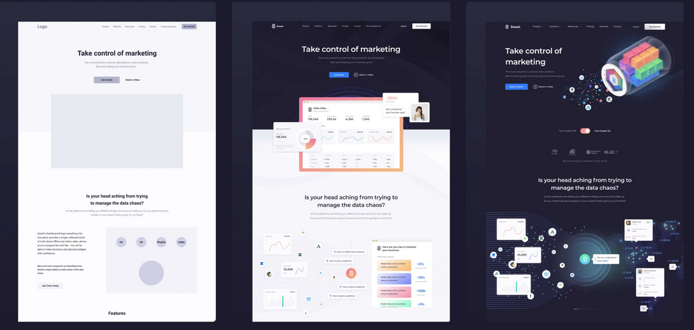

What is the future of front end development?
We can observe one key trend that is here to stay:simplicty.We have also considerd the best front end technologies that fit in to the trend,such as vuejs and gatsby,are defnitlty going to take advantage of it to gain popularity;however,this is no way means that the frameworks backed by google and facebook is bound to disappear.it just means that they also have to adapt in order to not lose the battle again new easy to use frame works,as Next js as shown us.
